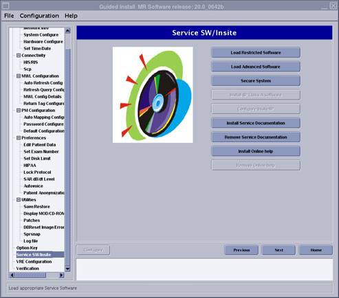
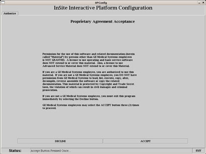
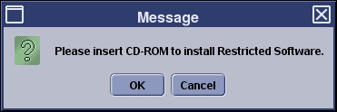

Proprietary to General Electric
Direction 5500113, Rev# 3
Discovery MR450 1.5T Service Methods
Module Version 7.0, Version Date 6/3/10
Proprietary to General Electric |
| Required Persons | Preliminary Reqs | Procedure | Finalization |
|---|---|---|---|
| 1 | Not Applicable | 30 mins | Not Applicable |
This procedure explains how to install and uninstall proprietary and advanced service software. An installation GUI accessed from the Common Services Desktop directs you through the installation or removal of this software.
| NOTE: | If loading service software, an Advanced or Restricted
service software CD-ROM is required.
|
| Item | Qty | Effectivity | Part# | Manufacturer |
|---|---|---|---|---|
| Restricted Software CD | 1 | - | - | - |
| Advanced Software CD | 1 | - | - | - |
Shut down all applications before loading the Restricted service or Advanced service media. These should not be loaded with applications software running.
Restart the system and log in as root with the Password, operator.
| NOTE: | If continuing from Host Software Load, you do not need to reboot at this time. |
Open the Guided Install and select FE Mode. Select the link: Click here to start this tool.
| NOTE: | Restricted Service Software is only available for GE use; Advanced Service Software is only available to sites with a valid Advanced Service Package Limited License. GE Healthcare Restricted Service Software permits configuration of InSite Interactive. |
Insert the Service Software media and from the left navigation menu, select [Service SW/InSite], and click [Load Restricted Software] or [Load Advanced Software].
Illustration 1: Configure InSite Menu

When the proprietary statement window displays, read the proprietary statement and click [Accept] three times to continue.
Illustration 2: Proprietary Password Screen

When the message window asks: Please Insert CD-ROM to Install Restricted Service, click [OK]. The Restricted software load in progress window displays.
Illustration 3: Insert Restricted Software Media

This load will take about three (3) minutes. The media is automatically ejected when the load is complete and the InSite Interactive screen displays.
To delete proprietary software, proceed as follows:
Open Guided Install and select FE Mode. Select the link: Click here to start this tool.
From the left navigation pane of the Guided Install, select [Service SW/InSite].
Click <Secure System> to delete proprietary software.
Once all proprietary and restricted software is loaded, configure the InSite Interactive Platform and complete the InSite checkout. For details on the InSite Interactive Platform, refer to Insite/IIP.